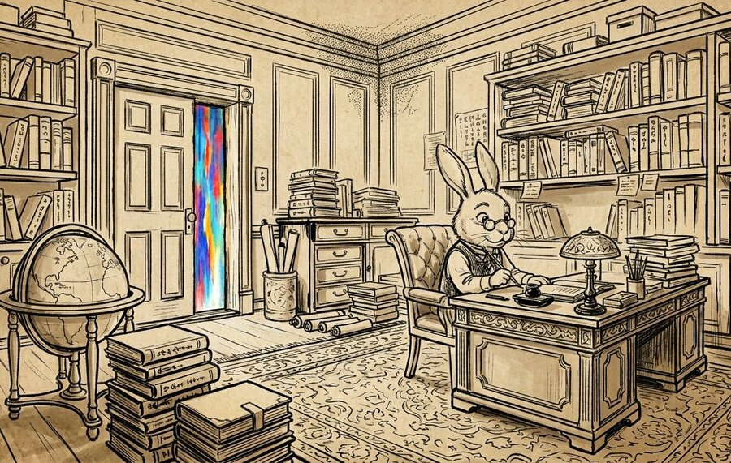
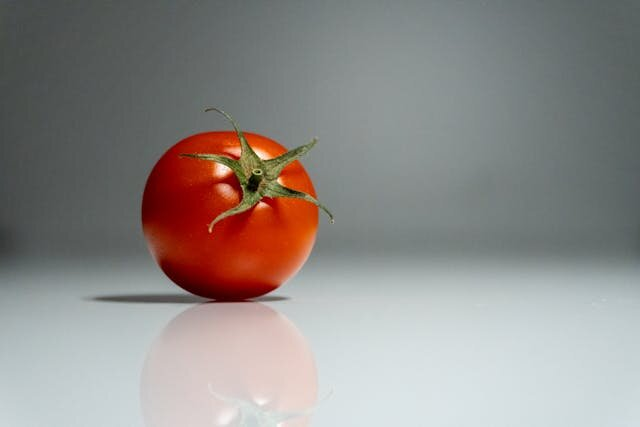

思考実験・哲学
モノクロの部屋で生まれ育った天才科学者マリー。「赤」についてのあらゆる知識を持ちながら、赤を一度も見たことがない。部屋を出た瞬間、彼女は何かを「学んだ」のだろうか。
フランク・ジャクソンが論文「Epiphenomenal Qualia」で発表。
同年、映画『ブレードランナー』公開。フォークランド紛争が勃発。マイケル・ジャクソンの『スリラー』が発売された年でもある。
提唱から40年以上が経つ。いまだに決着していない。それどころか、ジャクソン自身が後に立場を変えた。
失恋した友人に、「時間が解決するよ」と言ったことがある。悲しみのメカニズムは知っていたつもりだった。でも自分が同じ経験をしたとき、あの言葉がいかに的外れだったかがわかった。
知識としては完璧に理解していたはずなのに、実際にそれを経験した瞬間、まったく新しい何かがそこにあった。誰もが一度は覚えのある、あの感覚。
それを40年以上、哲学者たちが本気で議論し続けている。
「知っている」と「体験している」は、本当に同じことなのか。この問いに正解はない。だからこそ、自分の直感がどちらに傾くかを確かめる価値がある。
マリーは天才的な神経科学者神経科学（Neuroscience）
脳・神経系の仕組みを研究する学問。視覚の場合は、光がどう神経信号に変換され、脳で処理されるかを扱う。だ。生まれたときから、彼女は白黒の部屋に閉じ込められている。白黒のテレビ、白黒の本、白黒の世界。色というものを、一度も「見た」ことがない。
だがマリーは、色についてのあらゆる物理的知識を持っている。光の波長、網膜の錐体細胞錐体細胞（Cone cell）
目の網膜にある色を感知する細胞。赤・緑・青の3種類があり、波長の違いによって色を区別する。の反応、脳の視覚野視覚野（Visual Cortex）
後頭部にある、視覚情報を処理する脳の領域。目から入った信号はここで「見える」映像として処理される。がどのように色の情報を処理するか。「赤」を見たとき人間の神経系に何が起きるか、完全に記述できる。
そしてある日、部屋のドアが開く。マリーは初めて、赤いトマトを見る。
そのとき、マリーは何かを「新しく学んだ」のだろうか。

書棚と地球儀に囲まれた部屋。扉の向こうから、見たことのない色の光が差し込んでいる。
フランク・ジャクソン
Frank Jackson, 1943–
オーストラリアの哲学者。オーストラリア国立大学教授。1982年の論文「Epiphenomenal Qualia」でマリーの部屋を発表し、物理主義物理主義（Physicalism）
世界に存在するすべてのものは物理的なものであり、物理的な事実がすべての事実を決定するという哲学的立場。「心」も脳の物理的な活動に還元できるとする。に対する反論として提唱。しかし1990年代後半に自身の立場を転換し、物理主義を受け入れた。
"It seems just obvious that she will learn something about the world and our visual experience of it. But then it is inescapable that her previous knowledge was incomplete."
「彼女が世界について、そして私たちの視覚体験について、何かを学ぶであろうことは、まったく明らかに思える。だとすれば、彼女の以前の知識が不完全だったことは避けがたい。」
— Frank Jackson, "Epiphenomenal Qualia", The Philosophical Quarterly, Vol. 32, 1982
| 概念 | 意味 | マリーの部屋での役割 |
|---|---|---|
| 物理主義 | 世界はすべて物理的事実で説明できる | この思考実験が攻撃する対象 |
| クオリア | 主観的な「体験の質」（赤の「赤さ」） | マリーが知らなかったとされるもの |
| 知識論証 | マリーの部屋を使った反物理主義の議論 | ジャクソンが構築した論証の形式 |
| 副現象主義 | 心は脳に依存するが、脳には影響しない | ジャクソンの当初の結論 |
✗ よくある誤解
マリーはすべてを知っていたのだから、赤を見ても何も学ばないはずだ。
✓ 実際は
「すべての物理的知識を持つ」ことが「体験を知っている」ことと同じかどうかが、まさにこの問いの核心。これは結論ではなく問いの出発点だ。
✗ よくある誤解
これは科学の問題で、いずれ脳科学が解決するだろう。
✓ 実際は
脳の仕組みを完全に解明しても、「体験そのものの感じ」が説明できるかどうかは別問題だ——というのがこの問いの要点。脳科学の進歩とは独立した哲学的問いとされている。
✗ よくある誤解
ジャクソンは物理主義が間違いだと証明した。
✓ 実際は
ジャクソン自身が後に物理主義を受け入れ、2023年に「もうこの議論は受け入れていない」と述べた。この思考実験は「証明」ではなく「問い」として今も生き続けている。
哲学者たちがこの問いで真っ二つに割れた理由は、どちらの答えも「そう思える」からだ。理屈を読む前に、自分の直感がどこに引っかかるかを先に確かめてほしい。どちらが正しいか、ではなく、自分はどう感じるかを。
マリーが部屋を出て初めて赤を見たとき、
彼女は何かを「新しく学んだ」と思いますか?
ここに正解はない。だからこそ、この問いは40年以上にわたって議論され続けている。この後のセクションで、「はい」と「いいえ」のそれぞれを支持する哲学者たちの議論を見ていく。自分の直感がどちらに傾いたかを覚えておいてほしい。
知識と体験のあいだには、静かな距離がある。それが本物かどうか、哲学者たちはまだ決められずにいる。
— マリーの部屋をめぐる論争の要約として
マリーの部屋に対する反応は大きく分けて4つある。どれも筋が通っており、どれも反論を受けている。ひとつずつ見ていこう。
各立場の詳細
マリーは物理的な事実をすべて知っていた。にもかかわらず、赤を初めて見たとき、何かを新しく知った。ということは、物理的事実がすべてではない。世界には物理学が捉えきれない性質——クオリアクオリア（Qualia）
主観的な体験の質。「赤の赤さ」「痛みの痛さ」のように、客観的に記述しきれない体験の側面。哲学用語「quale」の複数形。——が存在する。これがジャクソンの元の結論だ。直感的には最も分かりやすい立場であり、多くの人がこちらに共感する。
デイヴィッド・チャーマーズデイヴィッド・チャーマーズ（David Chalmers, 1966–）
オーストラリア出身の哲学者。1995年の論文「Facing Up to the Problem of Consciousness」で「意識のハード問題」という概念を提唱した。はマリーの部屋の問いをさらに一般化した。脳の物理的な活動をすべて説明できたとしても、「なぜそこに主観的な体験が伴うのか」は説明できない——これを「意識のハード問題」と呼んだ。マリーの部屋が示すギャップは、意識そのものに関わるより根本的な問題の一部だ、という主張。
マリーが得たのは「新しい事実」ではなく、「赤を思い浮かべる」「赤を見分ける」という新しい能力だ——というのがこの立場。自転車の乗り方の説明書を完璧に暗記しても、実際に乗れるようになるのは別の話だ。だが乗れるようになったからといって、物理法則の外に何かがあるわけではない。同じように、マリーは新しい能力（スキル）を獲得しただけで、世界についての新しい事実を知ったわけではない、と主張する。
物理主義を擁護マリーが部屋の外で得たのは「新しい事実」でも「新しい能力」でもなく、すでに知っていた事実への「新しいアクセス方法」だ。本で読んだ富士山と、実際に目の前で見た富士山は、同じ対象についての知識だが、「知り方」が違う。知り方が変わっても、物理世界の外に何かが存在するわけではない。
物理主義を擁護この思考実験で最も驚くべき事実は、ジャクソン自身が後に物理主義を受け入れたことだ。マリーは確かに何かを学んだが、それは物理世界の外にある性質ではなく、「物理的な性質を新しい方法で知った」だけだ、と彼は結論を変えた。2023年のインタビューでは「もうこの議論は受け入れていない」と明言している。提唱者が反論に納得した思考実験、という奇妙な地位をこの問いは持っている。
立場の転換マリーの部屋は1982年に登場したが、「知識と体験は同じか」という問い自体は、はるか以前から存在していた。思想の系譜をたどると、300年以上の蓄積がある。
1714
ライプニッツの工場
ライプニッツが「モナドロジー」で提示。脳を巨大な工場に拡大して中を歩き回っても、そこに「知覚」は見つからないだろう、と論じた。
1925
ブロードの大天使
C.D.ブロードが、化学を完全に理解した大天使でもアンモニアの匂いを予測できないだろうと論じた。マリーの部屋の先駆的な着想。
1974
ネーゲル「コウモリであるとはどのようなことか」
トマス・ネーゲルが、超音波で世界を知覚するコウモリの体験は、人間にはどうやっても理解できないと論じた。「主観的体験」の哲学的議論に決定的な影響を与えた。
1982
ジャクソン「Epiphenomenal Qualia」
マリーの部屋が論文として発表される。物理主義への明確な反論として構築され、大きな論争を巻き起こした。
1986
ジャクソン「What Mary Didn't Know」
チャーチランドの批判を受けてジャクソンが反論を展開。論証を明確化し、議論をさらに精密なものにした。
1988–1994
反論の登場
ルイスが能力仮説（1988年）、ネミロウが類似の議論（1990年）、コニーが知り方仮説（1994年）を提出。物理主義の側からの反撃が本格化した。
1995
チャーマーズ「意識のハード問題」
マリーの部屋の問いを「意識のハード問題」という大きな枠組みの中に位置づけた。この概念は以降の意識研究の基盤となった。
1998頃
ジャクソンの転向
ジャクソン自身が物理主義を受け入れ、マリーの部屋の結論を撤回。「議論に明白な誤りはなかったが、結論は間違っていたに違いない」と述べた。
2004
論文集 "There's Something About Mary"
デネット、ルイス、チャーチランドら著名哲学者の応答を集めた論文集が出版。この問いの哲学史における重要性を決定づけた。
マリーの部屋が40年以上解決しない理由は、どちらの立場も「もっともらしい前提」に依存しており、その前提自体が証明も否定もできないからだ。
論争の構造
この実験は「マリーが色についてのあらゆる物理的知識を持っている」という設定から始まる。だが「あらゆる物理的知識」とは何か。脳の全ニューロンの状態まで含むのか。量子レベルの情報も含むのか。この前提をどこまで真剣に受け取るかで、結論が変わる。日常に置き換えると: 料理のレシピを「完全に」知っているとはどういうことか。材料・手順・科学的反応をすべて暗記しても、実際に作ったことがなければ「知っている」と言えるか——という問いに近い。
マリーが部屋を出て「何かを学んだ」とき、それは新しい事実なのか、新しい能力なのか、新しい知り方なのか。「学ぶ」という日常語のあいまいさが、この問いを決着不能にしている。「自転車に乗れるようになった」を「新しい知識を得た」と表現するかどうかで、答えが変わる。
最も深い問いはここにある。赤を見る体験は、それ自体が一種の「情報」なのか。もし体験が情報ならば、原理的には言語や数式で伝達できるはずだ。もし情報ではないなら、それは何なのか。この問いに答えるためには「情報とは何か」「意識とは何か」を定義する必要があるが、それこそがまだできていない。
つまり: マリーの部屋が解けないのは、「知識」「体験」「情報」という日常語の厳密な定義が——40年以上の議論を経ても——まだ合意に至っていないからだ。
マリーの部屋が哲学の外で共鳴するのは、その問いが日常の感覚に触れているからだ。「説明できるけど、分からない」「知識はあるのに、実感がない」。そういう経験は、誰にでもある。
映画「ブレードランナー」（1982年）/「ブレードランナー 2049」（2017年）
人工知能や複製人間が「本当の感情・体験を持つか」という問いは、マリーの部屋と構造が同じだ。レプリカントは記憶を「知識として」持っているが、体験として「感じている」のか。マリーの部屋と同じ1982年に公開されたのは偶然だが、時代が同じ問いに向き合っていた証拠でもある。
ドラマ「ウエストワールド」（HBO、2016〜2022年）
プログラムされたアンドロイドたちが「意識を持ち始める」物語の核心は、マリーの問いそのものだ。行動パターンや記憶を完全に設計されていても、ドロレスたちは「感じる何か」に目覚める。
日常の中の「マリーの部屋」
「失恋の痛みは、経験した人にしか分からない」「子を持つ親の気持ちは、親になってみないと分からない」——こうした言葉は、クオリアの存在を日常語で語っている。マリーの問いは、哲学書の外でも、静かに生きている。
この問いに答えは出ていない。モンティ・ホール問題とはそこが違う。どちらの立場にも筋の通った論理があり、どちらの直感にも確かな重みがある。
だが私が面白いと思うのは、多くの人が直感的に「はい、マリーは何かを学んだ」と感じることだ。その直感は、自分自身の経験から来ている。「分かっているのに、実感できない」という感覚を、誰もが持っているからだと思う。

この赤を、言葉だけで伝えることはできるだろうか。
悲しみを経験したことのない人に、悲しみを説明できるだろうか。言葉を尽くせば伝わるだろうか。もしその人が世界中の論文を読み、脳スキャンの結果をすべて暗記していたら。それでも、「悲しい」と「悲しみを知っている」のあいだには、何かが残るような気がする。
"Consciousness is the hard nut of the mind-body problem."
「意識は、心身問題のいちばん硬い殻だ。」
— David Chalmers, "Facing Up to the Problem of Consciousness", 1995
その「何か」が本当に存在するのか、それとも私たちの認知がそう思わせているだけなのか。マリーの部屋は、その問いを最も鋭い形で突きつけてくる。答えは出ていない。出ないかもしれない。だが、問い続けることには意味がある——と私は思う。なぜなら、「知っていることの限界」を知ることは、世界を見る目を少しだけ広げてくれるからだ。
マリーの部屋を生み出した論文そのもの。「クオリア・フリーク」と自称するところから始まる。10ページほどだが、この10ページが40年以上の論争を生んだ。有料だが、大学図書館経由でアクセスできることが多い。
チャーチランドの批判を受けてジャクソンが反論を展開した論文。1982年の議論を精密化し、3つの重要な明確化を行っている。原著論文とセットで読むと見え方が変わる。
Facing Up to the Problem of Consciousness
「意識のハード問題」という言葉を生み出した論文。マリーの部屋の問いを、より大きな枠組みに位置づけた。意識について考える人なら避けて通れない。著者自身のサイトでもPDFが公開されている。
Qualia: The Knowledge Argument
スタンフォード哲学百科事典によるマリーの部屋の解説。各反論を網羅的にまとめており、論争の全体像をつかむのに最適。無料・常時アクセス可。これを先に読んでおくと原著論文に入りやすい。